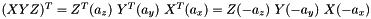

|
My Project
|
OpenGL is column major and numpy row major. More...
Functions | |
| def | translate (dx, dy, dz) |
| Returns a translation matrix. More... | |
| def | scale (sx, sy, sz) |
| Returns a scale matrix. More... | |
| def | rotate (ang, x, y, z) |
| Returns a rotation matrix. More... | |
| def | identity () |
| Returns an identity matrix. More... | |
| def | dot (a, b) |
| Matrix multiplication. More... | |
| def | translateAndRotate (ang, p, axis) |
| Rotate around an axis, passing through a given point. More... | |
| def | translateAndTransform (t, p) |
| Apply a given transformation t, using p as the fixed point. More... | |
| def | rotateZYX (angles) |
| Return a rotation matrix, given three angles in the order: ZYX (apply Z first, then Y, then X). More... | |
| def | rotateXYZ (angles) |
| Return a rotation matrix, given three angles in the order: XYZ (apply X first, then Y, then Z). More... | |
| def | getRotationMatrix (angle, axis) |
| Returns a rotation matrix about a given axis. More... | |
| def | main () |
| Main program for testing. More... | |
OpenGL is column major and numpy row major.
We use row major here, but could add order='F' in reshape, to transform to column major, I guess...
| def matrix.dot | ( | a, | |
| b | |||
| ) |
Matrix multiplication.
The matrix objects are a subclass of the numpy arrays (ndarray). The matrix objects inherit all the attributes and methods of ndarray. Another difference is that numpy matrices are strictly 2-dimensional, while numpy arrays can be of any dimension, i.e. they are n-dimensional.
The most important advantage of matrices is that they provide convenient notations for the matrix multiplication. If X and Y are two Matrices then X * Y defines the matrix multiplication. While on the other hand, if X and Y are ndarrays, X * Y define an element by element multiplication.
If we want to perform matrix multiplication with two numpy arrays (ndarray), we have to use the dot product.
Same as: glPushMatrix() glLoadMatrixf(a) glMultMatrixf(b) c = glGetDoublev ( GL_MODELVIEW_MATRIX ) glPopMatrix() return c
| a | first matrix. |
| b | second matrix. |
| def matrix.getRotationMatrix | ( | angle, | |
| axis | |||
| ) |
| def matrix.identity | ( | ) |
| def matrix.rotate | ( | ang, | |
| x, | |||
| y, | |||
| z | |||
| ) |
| def matrix.rotateXYZ | ( | angles | ) |
Return a rotation matrix, given three angles in the order: XYZ (apply X first, then Y, then Z).
| angles | a list with angle x, y and z. |
| def matrix.rotateZYX | ( | angles | ) |
Return a rotation matrix, given three angles in the order: ZYX (apply Z first, then Y, then X).
When the rotation is specified as rotations about three distinct axes (e.g. X-Y-Z), they should be called Tait–Bryan angles, but the popular term is still Euler angles. Therefore, we are going to call them Euler angles as well.
The industry standard is Z-Y-X because that corresponds to yaw, pitch and roll.
Note that: 
| angles | a list with angle x, y and z. |
| def matrix.scale | ( | sx, | |
| sy, | |||
| sz | |||
| ) |
| def matrix.translate | ( | dx, | |
| dy, | |||
| dz | |||
| ) |
| def matrix.translateAndRotate | ( | ang, | |
| p, | |||
| axis | |||
| ) |
Rotate around an axis, passing through a given point.
Same as: glPushMatrix() glLoadIdentity() glTranslate(p.x,p.y,p.z) glRotate(ang, axix.x, axis.y, axis.z) glTranslate(-p.x,-p.y,-p.z) T = glGetDoublev ( GL_MODELVIEW_MATRIX ) glPopMatrix() return T
| ang | rotation angle. |
| p | point the axix passes through. |
| axis | rotation axis. |
 1.8.11
1.8.11